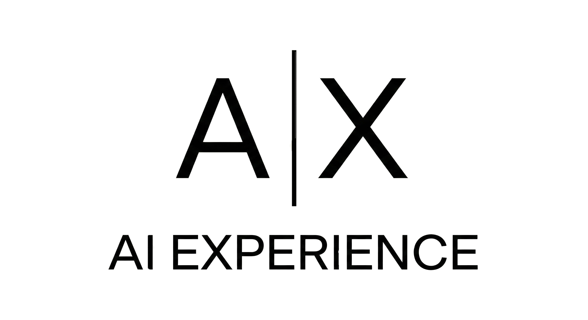

AI Experience
Mindre hype. Mer effekt i drift.
Vi hjelper virksomheter å gå fra AI-idé til målbar effekt: prioritering, agentiske løsninger i arbeidsflyten, trygg drift og varig adopsjon.
Hva vi leverer
- Diagnose og prioritering av tiltak med tydelig gevinst
- AI integrert med deres verktøy og data
- Styring, risiko og rammer som tåler drift
- Kompetanse, praksis og kultur som sikrer bruk
Slik jobber vi
-
1
Forstå arbeidet
Kartlegg beslutninger, ansvar, flyt og flaskehalser.
-
2
Design samspillet
Definer hva AI gjør, hva mennesker gjør, og hvordan det styres.
-
3
Bygg trygge rammer
Sikkerhet, kontroll og kvalitet bygges inn fra dag én.
-
4
Implementer og mål effekt
Pilot i ekte arbeid, iterer raskt, mål gevinster og skaler.
Hva dere får
- Mindre manuelt arbeid og færre tidstyver
- Raskere beslutninger med bedre grunnlag
- Trygg bruk med etterprøvbarhet og kontroll
- Varig endring: AI som faktisk blir brukt
Arbeidsflyt først
Start i jobben som gjøres, ikke i verktøyet.
Trygg drift
Tilgang, logging og kvalitet fra dag én.
Målbar effekt
Bygg i drift og mål faktisk gevinst.